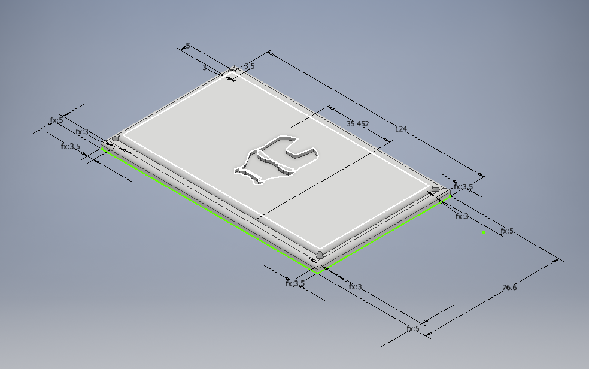

Self-Balancing Robot


As part of a fun, short personal project, the self-balancing robot was made to play around with control systems on real-life hardware.The parts were designed with CAD software and 3D printed. The control system was then implemented onto an Arduino microcontroller, which were connected to a LiPo battery, a motor driver and a MPU9050 sensor.
